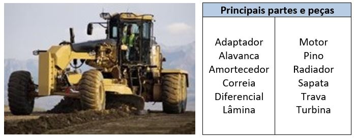
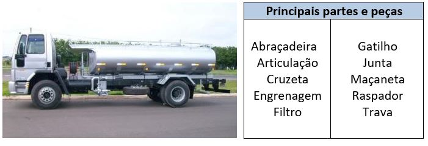
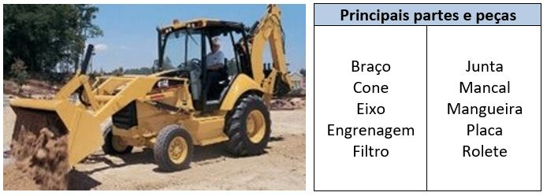

A infraestrutura de mina envolve os parâmetros de apoio imprescindíveis à extração do minério. Todos esses parâmetros devem estar em perfeitas condições de modo a permitir que a atividade se realize efetivamente, ou seja, eles devem ser confeccionados, supervisionados e mantidos permitindo que as atividades ocorram sem interruptas causas.
A infraestrutura de mina vai desde a supressão da vegetação à preparação da área para reabilitação da degradação, contemplando todas as ações relacionadas à exaustão do recurso mineral nas frentes de lavra. Logo, uma série de mecanismos de apoio às atividades de mina é necessária para contemplar as operações de mina. Esses farão com que a atividade de lavra ocorra de forma confiável e segura.
Uma das principais funções desta etapa de mina é fazer o “acerto de praça”, isto é, nivelar e limpar o solo para tornar possível o trabalho das perfuratrizes, escavadeiras, carregadeiras e caminhões.
Principais Equipamentos
Motoniveladora (Patrol) – Utilizado para fazer o acerto de praça na área para facilitar o acesso das máquinas dentro da mina.

Caminhão Pipa – Equipamentos que promovem o fácil acesso e o despoeiramento às vias da mineração e dentro da fábrica.

Retroescavadeira – Realiza formação de lera de proteção nas vias da mina e confecções de drenagem de modo a permitir a passagem e direcionamento da água pelas laterais das vias
